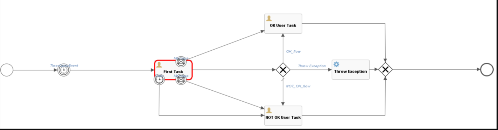
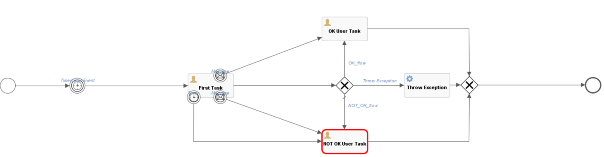
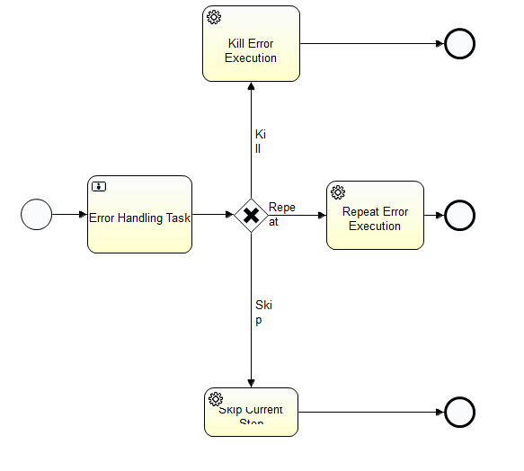
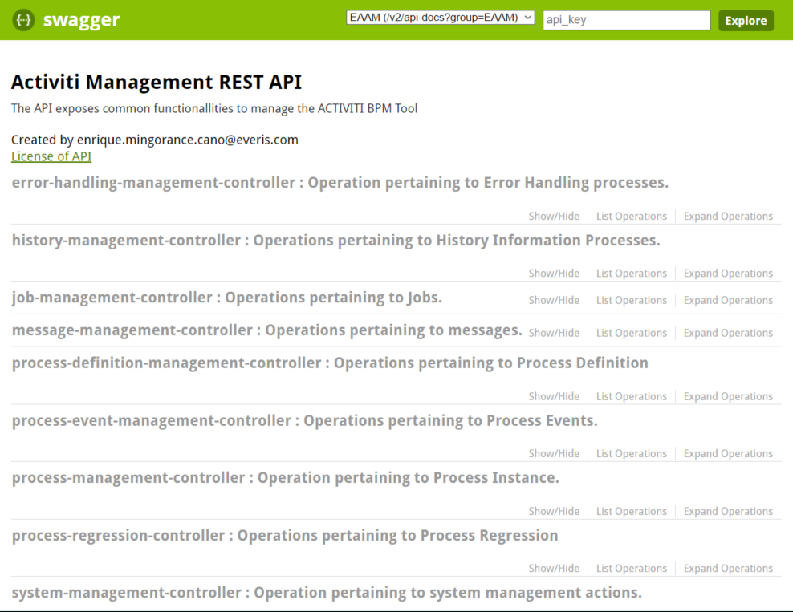

AMCA
Activiti Management CAR Alicante
Implantando BPM de forma ágil
Keyboard Shortcuts
| Full Screen | F |
| Next Slide | Space bar |
| Slide Notes | S |
| Thumbnail View | Esc |
Agenda
- ¿Qué es AMCA?
- ¿Qué nos aporta?
- ¿Cómo lo usamos?
- Casos de éxito
¿Qué es AMCA?
Es un framework que nos permite añadir un servicio de BPM en nuestras aplicaciones

¿Qué nos aporta?
- Nos ahorra tiempo
- Utilidades
- Totalmente desacoplado
Nos ahorra tiempo
-
Arranque
- Infraestructura (configuración del proyecto, base de datos, profiles)
- Test de integración
-
Utilidades
- Nos llevaría varios meses de desarrollo alcanzar este estado
- Arquitectura sólida
Utilidades
Herremienta de regresión
Nos permite "movernos" libremente por lo procesos.
 Utilidades
Gestión de excepciones
Al producirse una excepción, la transacción se guarda y un proceso de toma de decisiones entra en acción.
Utilidades
Gestión simple de Tareas
Adaptándose al contrato desde el cliente, la gestión de tareas se hace trivial.
Utilidades
Herramienta de gestión
¿Cómo lo usamos?
Añadiendo una dependencia o herendando la librería
activiti-management
com.everis.alicante.activiti
1.0.0-RELEASE
Casos de éxito
- Nettit
- Everilion
- WIPO
- Otros...